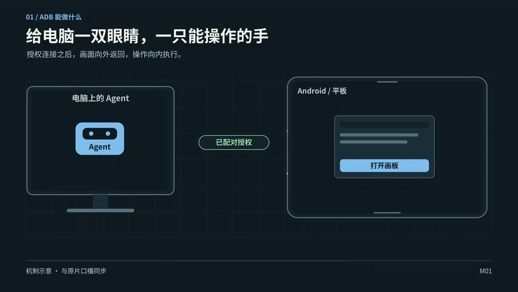
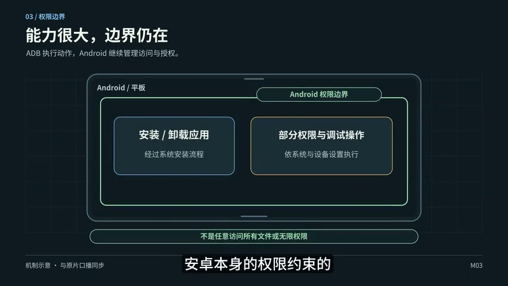
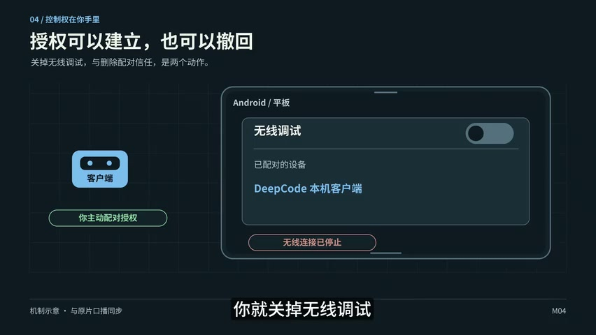
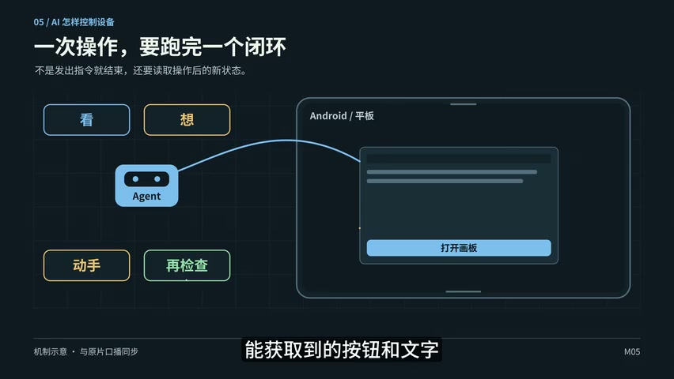
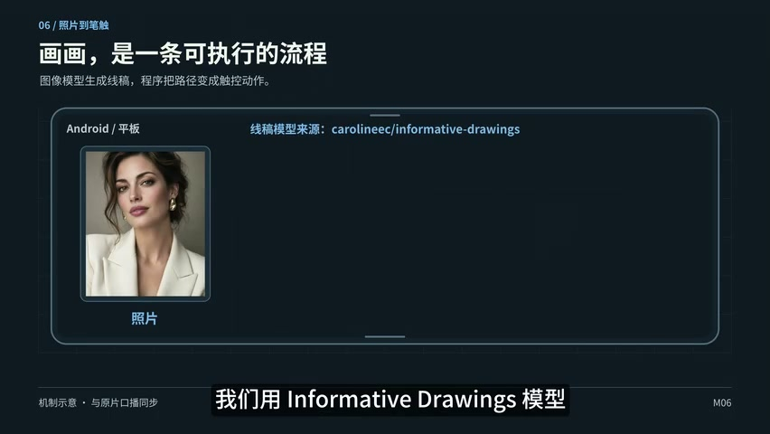
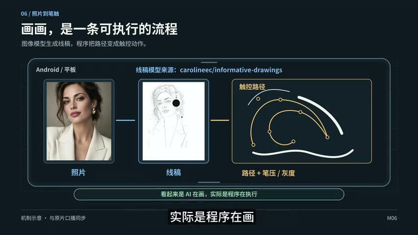

本期喂饭 / 安卓 × AI
喂饭，让你的安卓手机或平板比Siri更Siri
语音叫它画张素描，再让它帮你开发一个救急小应用——原片从一张“炸毛”的出差照开场，带着手机和平板一路折腾到无线 ADB。饭喂到嘴边了，接下来就看怎么动手。
开场就挺有画面感：出差回来拍了张照片，网友说作者的头发炸得像被雷击。他干脆让 AI 帮忙看照片，助手接了一句“头发还在云端巡航”。聊着聊着，作者又让它画一幅素描，本期的绝活就这么引出来了。
作者拿手机和平板做演示：把 Agent 环境装进安卓，再配上语音和 ADB，让它能看屏幕、动手操作，甚至开发小游戏。他觉得这比 Siri 好玩得多，也没藏着短板——现在的反应还是有点慢。
给电脑一双眼睛，再给它一只手
教程先从开发者模式开始：找到系统版本，连续点几下，再进开发者选项打开 USB 调试和无线调试。无线配对页面会给出配对码、地址和端口，把这些交给同一局域网里的电脑 Agent，告诉它准备 ADB 环境，就可以往下做了。
连上以后，电脑能给设备装应用、传文件，能截图读按钮和文字，也能点击、滑动、打字。作者的比喻很直白：相当于给电脑一双能看见屏幕的眼睛，再加一只会动手的手。


接下来就是构建、安装应用，再配置登录和语音等插件。作者还聊到一个顺手的小配件：蓝牙遥控器既有麦克风又有按键，可以开启语音、确认发送。整个玩法的趣味，就在于把身边这些东西接到一起。
真正有点绕的，是让设备里的 Agent 通过本机地址控制自己。原片强调配对界面要保持打开：有小窗就把两个界面放在一起，没有小窗可以请电脑 Agent 帮忙输入，让本地环境在后台配对。演示里的端口是当次参数，照着理解流程就好。
玩得开心，也得知道哪儿能踩刹车
讲到让 Agent 操作本机，作者先把风险摆上桌。AI 要是看不懂界面，可能在错误的 App 里发消息、改错设置，或者删掉它有权访问的文件。原片也提醒：安装、卸载和部分权限调整，仍受 Android 自己的权限约束。


用云端 API 时，作者尤其提醒隐私和资金界面别让它独自操作。不过，连接的前提是你主动配对授权；不想让它继续动手，可以关掉无线调试，或从配对列表删掉客户端。


看、想、动手，再检查
原理讲开以后，其实没那么玄。Agent 先通过截图或界面文字判断现在在哪、下一步干什么，再执行点击、滑动和输入。做完之后，重新看一眼有没有成功。


- 看与想：读到当前界面，判断位置和下一步。
- 动手：把判断变成点击、滑动或输入。
- 再检查：重新读取状态，看看事情到底办成没有。
一句“帮我画画”，背后是一串工序
开场的素描演示，到这里交代了做法：用 informative drawings 模型把照片变成线稿，再转成触控路径，配合模拟笔压和灰度，表现笔触的粗细深浅。作者也点明，画面看着像 AI 在画，实际执行绘画的是程序。
🎞 同一段画面，往后看十秒




画面补充 · 这两张图记录的是示意图逐步展开。照片、线稿和触控路径的对应关系可直接看见；实际绘画的连续过程需要回看原片。
其他应用也可以沿着这个思路做：把问题拆成一组设备操作，再封装成专门的 Skill。作者的重点，是把已有模型、程序和操作入口组合起来，让一个具体需求能真正跑完。
只用一次，也可以很值
作者讲得挺坦诚：他还没发现多少 AI 操作手机特别有用的场景。但平板就不同了。有次出差没带电脑，才发现处理灰片用的 LUT 留在旧电脑里，iPhone 拍的素材往平板上传也不方便。
怎么办？让平板里的 Agent 临时开发“救急应用”。作者举的例子，是开启一个服务，扫码上传素材，再给素材套上 LUT。这些工具可能只用一次，可卡在当时那个节骨眼上，就特别刚需。
所以视频最后又回到安卓的自由度：作者觉得它在 Agent 时代能玩出更多花样，甚至值得在 ADB 上再做一个更适合 Agent 的 CLI。几年前的老设备，也可以拿出来继续折腾。
这顿饭吃完，带走什么？
- 原片的路线是开发者选项、无线 ADB 配对、部署本地环境，再处理本机控制的授权。
- 设备操作按“看、想、动手、再检查”来组织；停止方法包括关闭无线调试或删除配对。
- 作者既展示玩法，也保留了速度偏慢、手机场景尚不丰富的现实感。
- 平板上的救急应用，是作者觉得真正有用的一块；有旧设备、有具体小需求，就有折腾的空间。
素材出处、时间与整理说明
正文依据仓库已有字幕与6张真实视频帧整理，尽量保留原片的叙述顺序、玩笑、例子和限定。紫色“AI 评论”由本次整理新增，不代表原片作者的观点，也不是对未来趋势的事实断言。